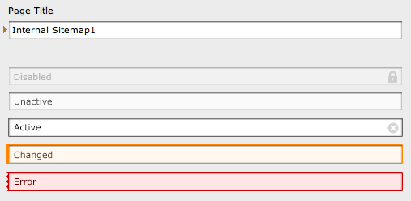

Bug #12221
Position and styling of icons for required and changed fields in TCE forms are wrong
| Status: | Closed | Start date: | 2011-01-14 | |
|---|---|---|---|---|
| Priority: | Must have | Due date: | 2011-01-19 | |
| Assigned To: | Jens Hoffmann | % Done: | 0% |
|
| Category: | Design | |||
| Target version: | - | |||
| Tags: |
Description
Since TYPO3 4.4 we have got a new position for the small reddish arrow marking a change of a field and the yellowish triangle marking a required field with an empty value.
These icons are now positioned to the right of the label of a field instead of to the left of the field itself, which was the original position before.
The problem with the arrow is, that it doesn't point to the changed field anymore but to the right of the label, which is just empty.
The triangle is much too close to the label.
Currently there are two variants we have in mind to fix this:
1. Move both to the left of the field again and leave an empty space there, if none of the icons is visible, to avoid shifting the field to the right.
2. Get rid of these icons and use background- and/or border-colors to mark the fields in a certain way.
We need a decision here as soon as possible, so that this can be fixed for RC1
{kind=link}
Related issues
History
#1 Updated by Lars Zimmermann over 4 years ago
Hi Joey,
I think to have the icons removed and fields colored would work great in terms of the "attention" something is missing case... If something is wrong the field-background would change to a certain colour, but I think to have each field colored somebody changed something in would be awful.
So in my opinion the better way would be to create a white-space indent for the whole form to put the icons again in front of the fields. I think instead of the actual margin-left: 10px a value of 25px would be fine. Though the formular is not aligned anymore with the first word in the first tab, I think that's the best solution. And as long as the difference between the word from the first tab and the rest of the form is big enough it should work...
cheers and thanks joey!
lars
#2 Updated by Jens Hoffmann over 4 years ago
+1 for Lars suggestion.
Maybe a better Icon would be a nice to have.
Greez Jens
#3 Updated by Lars Zimmermann over 4 years ago
- Status changed from New to Under Review
#4 Updated by Jens Hoffmann about 3 years ago
- File Input-States.png added
- Status changed from Under Review to Needs Feedback
Did a quick Design for this "problem".
The Indicator at the left side are for color-blind people.
Greez Jens

#5 Updated by Steffen Ritter about 3 years ago
Will tackle this one today...
2 things to question: how to indicate changes, errors and requirements in non ative tabs?
Hope to talk to Lars about this today....
#6 Updated by Jens Hoffmann about 3 years ago
- Category changed from Interface to Design
- Assigned To set to Jens Hoffmann
Solution for Tabs is missing - I will provide one Tonight.
Right now I would suggest to go for a fully styled tab instead of an icon.
#7 Updated by Jens Hoffmann over 2 years ago
- Target version deleted (
TYPO3 4.5 LTS)
#8 Updated by Benjamin Mack 25 days ago
- Status changed from Needs Feedback to Closed
fixed in our next CMS 7 version.